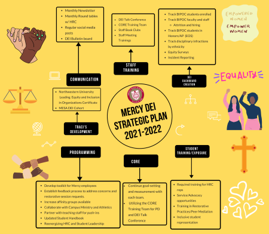

Mercy High School Diversity, Equity & Inclusion (DEI)
A hallmark of a Mercy education is the development of a strong voice used to support the Critical Concerns of the Sisters of Mercy: Earth; Immigration; Nonviolence; Racism; Women. Mercy High School is committed to ensuring all students experience an education that reflects the Mercy values of Human Dignity, Mercy, Justice, Service and Option for the Poor in an environment free of racism and social injustices. Every Mercy girl should feel welcome and that Mercy is her home.
Mercy High School Statement Against Racism
Mercy High School supports the Critical Concerns of the Sisters of Mercy, including our belief that racism is an evil affecting us all. We work to recognize and dismantle racism in order to become an anti-racist multicultural community. Mercy High School is committed to establishing and sustaining an equitable, fair, and just community that ensures student wellness, safety, and educational success regardless of their race, ethnicity, or zip code. Mercy High School rejects all forms of racism as destructive to their mission, vision, values, and goals. Racism will not be tolerated in the school campus, physical and online communities. Alleged violations of this policy will be investigated with due care and, if confirmed, may be met with serious consequences. Through the conduct of school staff and administrators, school policies, curriculum, extra-curricular activities, student support services, and parent/guardian involvement organizations, Mercy will cultivate a greater understanding of the concepts of diversity, inclusion, intersectionality, equity, implicit bias, xenophobia, white privilege, white supremacy, systemic racism, and anti-racism.
DEI Talk for K-12 Teachers - Moving from Talk to Sustainable Action
This is a high-level overview of the DEI goals for the 2021-2022 school year. Mercy has made significant strides in making our institution a more just and inclusive environment, however, we have a ways to go. These steps will help to move us forward on our journey to becoming a Just Mercy for our students and staff.

- Mercy High School Board of Trustees Racial Equity Task Force Mission
-
The Board Equity Task Force serves with Mercy High School Administration and CORE (Council on Racial Equity) to establish policies, practices and structures that create and foster an anti-racist and anti-biased learning environment for all students. We will welcome and engage community members in the spirit of the Sisters of Mercy Critical Concerns to recognize, address and eliminate racism while strengthening communication and inclusivity.
- Mercy CORE (Council on Racial Equity)
-
CORE Mission: The Council’s mission is to build awareness, solutions and leadership for anti-racist, anti-biased structures, policies and practices at Mercy High School. We will work with the school and the Diversity, Equity and Inclusion Officer to identify systemic racism within the community, analyze the specific barriers to change, and dismantle the structures within the institution that perpetuate racism.
CORE Vision: We imagine a future without systemic racism that empowers all members of the Mercy community to maximize their individual potential in an inclusive, anti-racist and anti-oppressive environment.
- Mercy DEI Giving Circle
-
You are a vital member of the Mercy community and, with your help, we can create a place for our young women to thrive. You are invited to join us as we strive to create a More Just Mercy.What is the DEI Giving Circle?Members of the Mercy community who have chosen to come together and give their financial support to diversity, equity and inclusion initiatives at Mercy High School.What is the Impact of the Mercy Giving Circle?In addition to supporting the collective mission and objectives of the Diversity, Equality and Inclusion (DEI) Director, Board Task Force, and Mercy CORE, the DEI Giving Circle supports:
- Mercy Chapter of Pretty Brown Girl (24 members)
- Parent DEI Training
- Staff DEI Training
- Stipends/travel for Diversity, Equity and Inclusion speakers
- Virtual/in person community building engagement opportunities
How Can I Participate?In this inaugural year, the DEI Giving Circle is open to anyone who makes a gift or one year pledge of $250 or more, and designates their gift for DEI purposes at the school. This is an annual renewable opportunity and, with the support of at least 125 Mercy community members, all areas of impact listed above can be achieved.How Will Members Be Involved?The Giving Circle will meet in the Spring of 2021 to receive an update on membership, fund total and fund distribution. - 2020-21 School Year Plan
-
- DEI restorative meetings and one-on-one discussions with students have been instituted. The goal is to help forge trust, understanding and help students deal with conflict more effectively.
- Curriculum review of English Literature to incorporate DEI class facilitation, reflection and The Hate U Give by Angie Thomas to English 9 coursework.
- Launched the first chapter of the Pretty Brown Girls Club which was founded nationally by Mercy Distinguished Alumna Sheri Johnson Crawley ‘90 and created the Student Diversity Union Club.
- DEI Digest monthly communication implemented to share diverse holidays to celebrate as a community, best teaching practices for an inclusive classroom, key DEI initiatives of the Sisters of Mercy, and important information and resources for students and families.
- Staff Book Club discussing So You Want to Talk About Race by Ijeoma Oluo.
- All staff and Board of Trustees training sessions held with Calvin Terrell.
- Updating policies for review of internal and external images, messaging and marketing using a DEI lens.
- Equity Climate Survey will be distributed to staff and students for data collection and analysis in January 2021.
- Unconscious Bias & Cultural Competence Training will be held in January 2021.
- Eliminating Racism & Creating/Celebrating Equity (ERACCE) staff training scheduled for August 2021.
Timeline
- June 3: Virtual Prayer Service to Unite Against Racial Injustice hosted by Mercy Campus Ministry
- June 4: Virtual Student Round-table Discussion and Reflection: Processing the Current Incidents of Racial Injustice led by DEI Consultant and Administration
- June 8: Creating A More Just Mercy Community Webinar led by DEI Consultant and Administration
- June 10: Board of Trustees Racial Equity Task Force formed and Co-Chairs identified
- June 11: Virtual Alumnae Forum hosted by Black Alumnae & Mercy Director of Alumnae Relations
- June 15: Board of Trustees Special Meeting – Alumnae Forum issues and concerns reviewed
- June 16: Administration follow-up discussion to June 4 Student Round-table with members of Class of 2020 and Class of 2021
- June 19: Mercy Council on Racial Equity (CORE) Mission & Vision Statement announced and application released for CORE Steering Committee
- July 1: DEI Director Position posted through July 31
- July 6: CORE application due date
- July 15: Board of Trustees Meeting – Racial Equity Governance Structure discussed and accepted
- July 17: Calvin Terrell intake and assessment of Mercy High School regarding racism with Administration
- July 21: CORE Steering Committee Members announced
- July 28: Board of Trustees Racial Equity Task Force meeting - Priorities: Mission; Communication & Accountability; Cultural Proficiency and Anti-Racism Policies
- July 29: CORE kick-off planning meeting
- July 31: DEI Director selection process begins with 160+ applications reviewed
- August 7–14: DEI Director 12 applicants interviewed by Students, Teachers, Alumnae, Board Members, CORE and Administration
- August 14: Administration & CORE finalized Mercy Statement Against Racism
- August 17: DEI Director accepted position
- August 20: Mercy Statement Against Racism presented and accepted by Board of Trustees Racial Equity Task Force
- August 24: CORE Subcommittee Chairs assignment meeting
- August 31: Director of DEI Traci Smith reports to Mercy
- September 1: DEI Action Plan Update communication sent to Mercy community members
- September 9: All Mercy Staff DEI training with Calvin Terrell
- October 7: Board of Trustees DEI training with Calvin Terrell and Board Retreat
- October 8: Communication from Administration RE: Club Messaging
- October: Mercy Education System of the Americas (MESA) virtual training on racism for select Board Members, Staff and Administrators
- January 15, 2021: Unconscious Bias & Cultural Competence Training for Staff
- January 22, 2021: CORE Subcommittee Membership Application Released
- February 5, 2021: CORE Subcommittee Application Deadline
- February 22-23, 2021: MESA, Head of School, and Board President session on racism
- March TBD 2021: MESA Stewardship Review of Mercy High School for select Board Members, Staff and Administrators with focus on racism
Mercy High School Director of Diversity, Equity & Inclusion
I am so honored to work at Mercy to create an anti-racist and anti-biased learning environment for all students. I have received so much support from all levels of the Mercy community, board members, alumnae, administrators, faculty, staff, and students. I am committed to making a “More Just Mercy,“ Traci Smith, Director of Diversity, Equity & Inclusion.